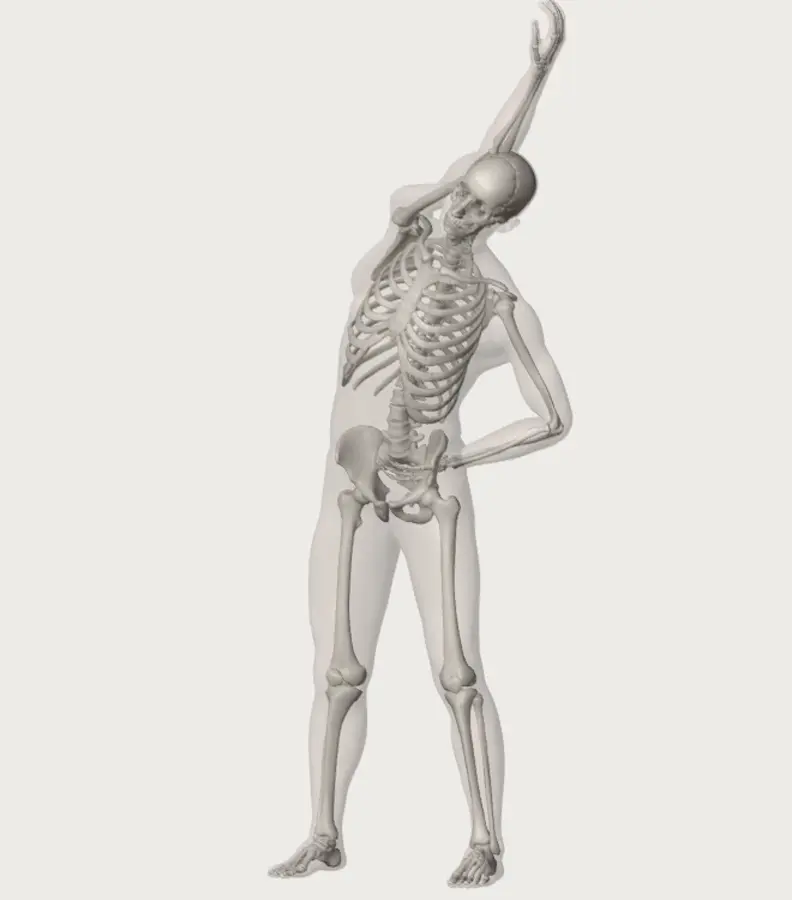
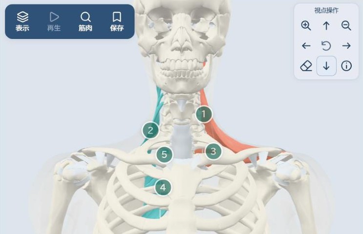
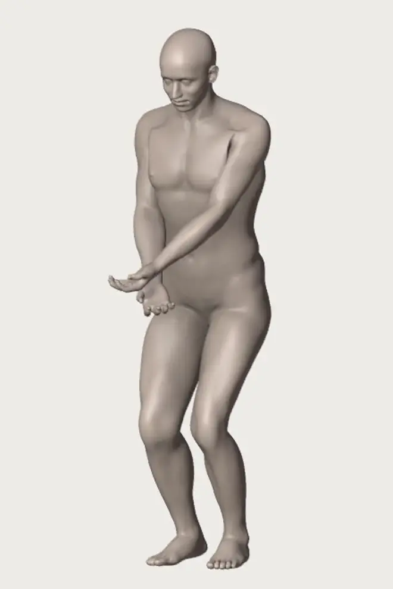
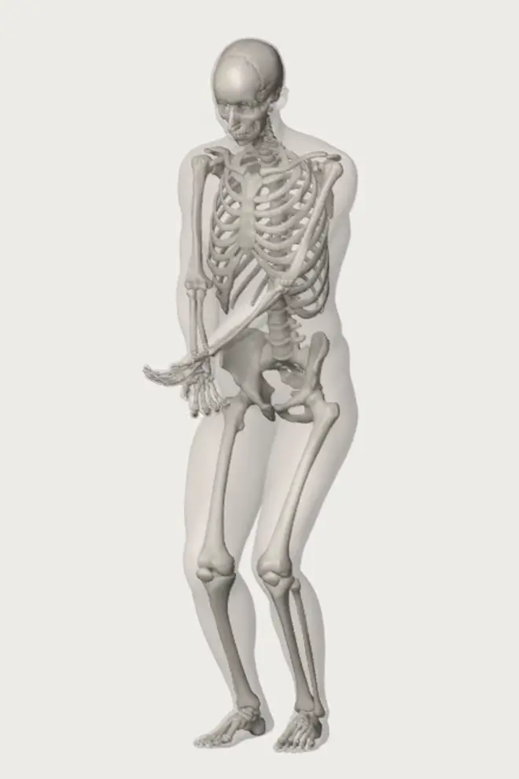
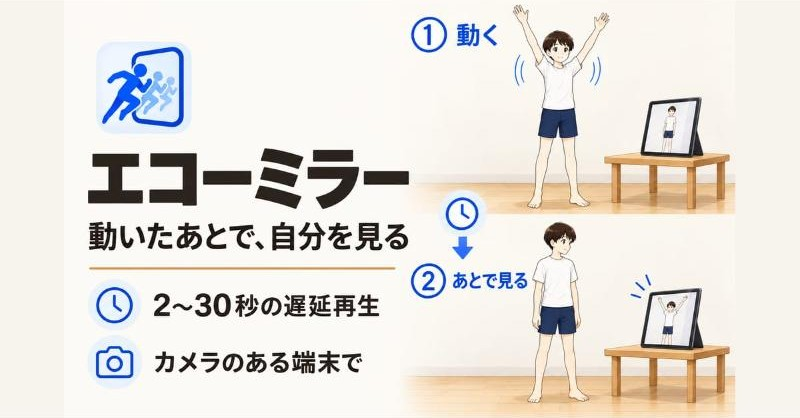
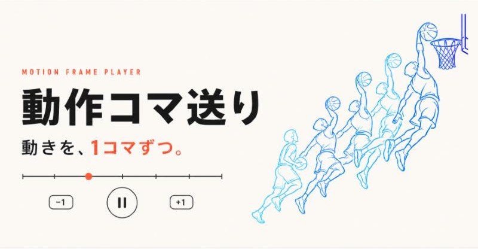

AI時代に
ボディワーカーが
できること

私はボディワークの仕事をしています。ITとはまったく無縁で、業務に必要ないため、長年パソコンすら持っていませんでした。Zoomも「そういえば使ったことがあったかな？」というレベルです。
そんな私が、生成AIのコーディングツール（CodexやClaude Code）を使い始め、半年でチャットボットや3Dの解剖学アプリを作るようになりました。
きっかけは、シンギュラリティソサエティ（SS）の第4回ブートキャンプです。Vibe Codingチームに所属し、「体のないLLM（大規模言語モデル）に『からだ』を伝える」というテーマに取り組んできました。
この記事では、半年間の試行錯誤を通して見えてきた「AI時代にボディワーカーができること」を整理してみます。
なぜ、LLMは「からだ」のことが苦手なのか？
数学やプログラミングのように正解が決まりやすい分野では、LLMはすでに専門家並みの力を持っています。しかし、「からだ」やボディワークの領域になると、話が変わります。
理由は大きく2つあります。
- 「実践の知」はデータになりにくい
ボディワークの知見は、実験や統計の数値というより、実践を積んだ人の経験から生まれるものです。正解が一つに決まらないため、エビデンスをもとに答えを出したいLLMには構造的に扱いにくい領域です。
- 目の前の「あなたの体」を見ていない
どれだけ知識が豊富でも、LLMには体がなく、相談者の体を直接見ることもできません。そのアドバイスをどこまで信じていいのか、という根本的な壁があります。
原点は「二十歳の自分が欲しかったもの」
私がこの壁に挑もうと思った背景には、二十歳の頃の記憶があります。
当時、合気道をやっていた私は、体のことをもっと深く知りたいと思っていました。ところが、武道の本を読み漁っても「肩甲骨をこう使う」といったコツが“点”で終わってしまい、全体像が見えてきません。
整体は体を治すことに寄り、スポーツ科学は数値に寄る。科学の知識も、実践者の知恵も、両方欲しいのに、体を一つのシステムとして統合的に学べる場所がありませんでした。
「あのとき二十歳の自分が欲しかったものを、今ならAIと一緒に作れるのではないか」
それが、私が「ボディワーク工学」と呼んでいる取り組みの出発点です。
AI時代にボディワーカーができる3つのこと
LLMは体のことが苦手です。しかし、だからこそボディワーカーが関わる意味があります。半年間、手を動かし続けて見えてきた「できること」は、次の3つです。
1. 実践の知識を、LLMが扱える形に「翻訳」する
最初に取り組んだのは、ボディワークの考え方や体操を案内するチャットボット作りでした。
ところが、ただ知識を詰め込んだだけではうまくいきません。ボディワークの理論だけで何でも説明しようとして科学を無視してしまったり、逆に安全側に寄せすぎると、当たり障りのない退屈な答えしか返ってこなくなったりするのです。
そこで私は、ボディワークで使われる言葉を一つずつ定義し直し、知識の出所と確かさを整理して、LLMが読み解ける構造を作りました。
- 科学で確かめられていることは、科学の知識で答える
- 実践から得られた知恵は、「試してみるアイディア」として提案する
独自理論に偏りすぎず、科学と実践をバランスよく織り交ぜる。この設計にいちばん苦労しました。
また、開発の途中で大きな方針転換もしました。最初は「何でも答えられるオールインワンのチャットボット」を目指していたのですが、会話だけで伝えようとすると説明が長くなり、回答も安定しません。
そこで、まず「参照元となるWebサイト」を作り、全体像はサイトでつかみ、個人の疑問からチャットに入るという形に切り替えました。情報の受け皿を整理したことで、チャットボットはようやく納得のいく水準になりました。
2. 体の中を「目で見てわかる」形にする
AIの力を借りれば、専門家でなくても、体の仕組みを視覚的にわかりやすく表現できます。テキストや口頭だけでは伝わりにくかった「体の中」を見える化する。これが2つ目にできることです。
「9割を削る」ことで見えた本質
まず、動画生成ツール（MulmoCast）を使って1分間の解説動画の発信を始めました。動画の伝わりやすさを実感した一方で、大きな気づきもありました。
それは、「LLMは引き算が苦手だ」ということです。AIに構成を任せると、どうしても情報を詰め込みすぎてしまいます。LLMが出した案の9割を削ぎ落とし、「本当に伝えたい核は何か」を絞り込む。この作業は大変でしたが、私自身の頭を整理する良い訓練にもなりました。
普段の言葉で引ける3Dアプリ「筋肉マップ」
続いて公開したのが、「筋肉マップ」という3D解剖学アプリです。筋肉の専門用語を知らなくても、「ここが張る」「こういう動きがつらい」といった普段の言葉で質問するだけで、関係する筋肉が3Dで表示されます。
これは実際のセッションでも大活躍しています。施術中にどの筋肉が鍵になっているかをその場で検索し、立体映像で見せると、クライアントさんからこんな反応が返ってきます。
「私の課題はやっぱりそこなんですね」 「まさにその場所が気持ち悪いです」
従来の3D解剖学アプリと違い、言葉で直感的に呼び出せるため、現場での使いやすさが段違いです。さらに、復習用の体操動画に解説を添えることで、クライアントさんが自宅でも「どこを意識すればいいのか」を迷わず実践できるようになりました。

皮膚を透かして見る、全身の3Dモデルへ
手や足など部位ごとに3D表現を試していた10月、ブートキャンプの週報で有本さんからこんな助言をいただきました。
「ずっと見ていて、筋肉や骨格を扱うフレームワーク的なものをまずは作ると良いと思いました。問題点はよく把握していると思うので」
この言葉をきっかけに、骨格と体全体の動きを一つに統合する“土台”づくりに挑戦することにしました。3Dモデリングツール（Tripo）や既存の人体モデルを参考に、試行錯誤の日々が始まります。
いちばん苦戦したのは、「骨を動かしたときに、どこまでの皮膚がついてくるか」という連動の表現です。最初は脚を上げるだけで、お尻まで丸ごと太ももにくっついてきてしまうなど、破綻の連続でした。いくつかのAIモデルを試した末、Fable 5.2を使ったところで、ようやく全身が自然につながりました。
そして11月、皮膚と骨格が同じ関節で動く全身モデルが完成しました。しゃがむ、前屈する、腕を上げるといった動作を、「皮膚だけ」「骨格だけ」「両方を重ねた状態」で見比べることができます。

皮膚だけの表示

骨格を重ねた表示
このモデルを使って最初に作ったのが、「マウスと肩甲骨」という2分間の教材動画です。マウスが遠いときと手元にあるときで、肘や肩甲骨の位置がどう変わるのかを、皮膚を透かして見比べられます。
人間工学の目安（肩をゆるめる、上腕を体のわきに下ろす、肘を90〜120度にする）に、私がボディワークで伝えている「腕の重さを体で受ける」という感覚を重ね合わせた一本です。
3. 最後は「自分の体で確かめる」ことを手伝う
AIや科学がどれだけ進化しても、究極のところ、LLMは「あなたの体」そのものを知ることはできません。 AIが扱えるのは、数値や言葉に変換できたデータだけです。
もちろん、私は科学を否定しているわけではなく、むしろ大いに活用すべきだと考えています。ただ、科学的に効果が証明された薬であっても、実際に自分に合うかどうかは飲んで確かめるしかありません。ボディワークにおいては、その個人差がさらに大きくなります。
研究の平均値は参考にしながらも、最後は自分の体で試して探っていくしかないのです。
自分の体は「サンプル数1」。でも、自分にとっては絶対のサンプルです。
自分の体を感じ、試行錯誤の中から知見を得る。その営みだけは、AIがどれだけ発達しても本人にしかできません。そこにこそボディワークの本質的な価値があり、これからも必要とされ続ける理由があると思っています。
だから、私が作ったチャットボットは「正解」を教えません。「こういう視点もありますよ」と、試すためのアイディアを差し出す設計にしています。
さらに、自分の体を観察・研究するための小さな道具もいくつか作りました。
- エコーミラー：カメラ映像を20〜30秒遅らせて映し、自分の動きを後から客観的に見返せるツール

- 動作コマ送り：撮影した動きを1コマずつ確認できるツール

実は、これらのツールをいちばん愛用しているのは私自身です。「自分で使って本当に役立つ」「面白い」という実感があるからこそ、作り続けることができています。
これから：自分の体は「進化していける」と感じられるものへ
骨格と皮膚の全身モデルは、まだ試作段階です。腕を高く上げたときに肩が突き抜けてしまったり、深くしゃがんだときに皮膚の変形が不自然になったりと、課題は残っています。次は、肩甲骨と肩関節の複雑な動きを再現することを目指しています。
土台を整えながら、クライアントさんに向けた実践的なコンテンツも増やしていく予定です。
- デスクワークの合間にできる体操
- 体に負担をかけない荷物の持ち方
- 筋トレの動きを正しくイメージするための3Dガイド
- セルフマッサージに使える「トリガーポイント」や「ツボ」の筋肉マップ追加
どのツールも、ゴールは同じです。最後は、自分の体でやってみること。
「こうすれば、自分の体とうまく付き合っていけるんだ」 「自分の体は、まだまだ変化して、進化していけるんだ」
AIの力を借りながら、そんな手応えを感じてもらえるものを、これからも作り続けていきたいと思っています。
【あとがき】パソコンを持っていなかった私のブートキャンプ体験記
ここからは少し補足として、非エンジニアの私が半年間ブートキャンプに参加して感じたことを書き残しておきます。
参加を決めたのは、CodexやClaude Codeで少しずつアプリが作れるようになってきた頃でした。「もっと実践的な知見を得たい」「作ったものを発表できる場がほしい」とコミュニティを探していたのがきっかけです。
これからのAI時代は、「専門領域の知識（ドメイン知識）」が何より重要になります。整体師やボディワーカーの世界は、ITが得意な人がまだ多くありません。だからこそ、自分のドメイン知識とAIを掛け合わせれば、誰も作れないユニークなものができるはずだと思いました。
とはいえ、現場は知らないツールだらけでした。Slack、Zoom、Google Meet、GitHub……。「デスクワークの人たちは、こうやって仕事をしているのか！」という驚きからのスタートです。ITに疎いという立場はハンデでもありましたが、同時に新鮮な面白さでもありました。
半年たっても、エンジニアの方が使う専門用語はいまだによく分かりません。それでも、「エンジニアの人は何を見て、どう考えながら作っているのか」という世界観が、ぼんやりと見えるようになってきました。
行き詰まったときの考え方、仲間からの刺激やフィードバック、そして発表の場。半年間でたくさんのものが作れるようになりましたが、いちばんの収穫は、そうした「新しい視点」をもらえたことでした。
発表会では非エンジニアの参加者も増えていて、その作り込みの高さに大きな刺激を受けました。専門外だからこそ見つけられる面白さが、AI時代には確かにあると感じています。